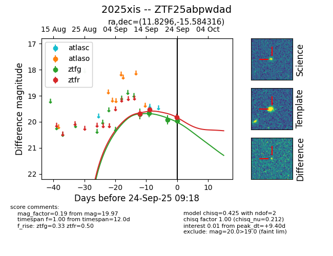
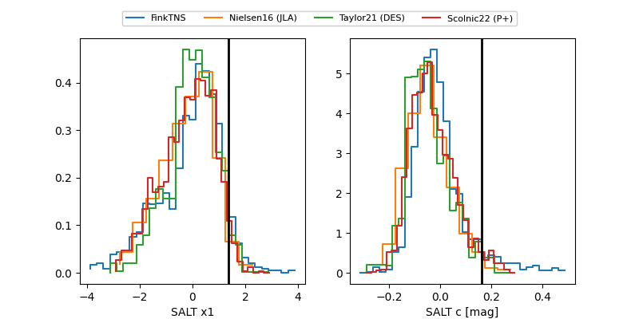

FINK: ZTF25abpwdad
Lasair: ZTF25abpwdad
ALeRCE: ZTF25abpwdad
TNS: 2025xis
YSE: 2025xis
ZTF25abpwdad (ztf,fink)
2025xis (tns,yse)
equatorial (ra, dec) = (11.8296,-15.58432)
galactic (l, b) = (117.9859,-78.41648)


last ztfg=19.97, ztfr=19.83
4 ztfg, 3 ztfr detections